당신이
별을 구매해야 하는 이유
한 평생 가질 수 있다
별도 언제까지나 그대로 존재하지는 않는다. 우리들처럼 태어나고, 자라고,
또 죽게 된다. 하지만 우리는 그런 별들의 변화를 전혀 눈치채지 못한다.
그것은 우리가 평생을 사는 시간은 찰나(刹那)이고 별이 평생을 사는
시간은 억겁(億劫)에 가깝기 때문이다.
별의 일생을 한 마디로 표현하면 '끝없는 에너지의 발산'이라고 할 수 있다. 그런데 끝없는 에너지의 발산은 언제까지 계속될까? 답은 간단하다. 그 에너지가 다 떨어질 때까지이다. 별은 태어나 성장 과정을 거친 다음, 폭발과 같은 방법으로 그 일생을 마감한다. 그것이 바로 별의 일생이다.
그럼 별의 수명은 어느 정도나 될까?
별은 처음 만들어질 때의 질량에 따라 서로 다른 일생을 겪는다. 질량이 큰 별은 수명이 수백만 년 정도밖에 안 되지만, 질량이 작은 별은 수백억 년이나 된다. 별의 일생에 비하면 인간의 인생은 순간일 뿐이다.
별의 일생을 한 마디로 표현하면 '끝없는 에너지의 발산'이라고 할 수 있다. 그런데 끝없는 에너지의 발산은 언제까지 계속될까? 답은 간단하다. 그 에너지가 다 떨어질 때까지이다. 별은 태어나 성장 과정을 거친 다음, 폭발과 같은 방법으로 그 일생을 마감한다. 그것이 바로 별의 일생이다.
그럼 별의 수명은 어느 정도나 될까?
별은 처음 만들어질 때의 질량에 따라 서로 다른 일생을 겪는다. 질량이 큰 별은 수명이 수백만 년 정도밖에 안 되지만, 질량이 작은 별은 수백억 년이나 된다. 별의 일생에 비하면 인간의 인생은 순간일 뿐이다.
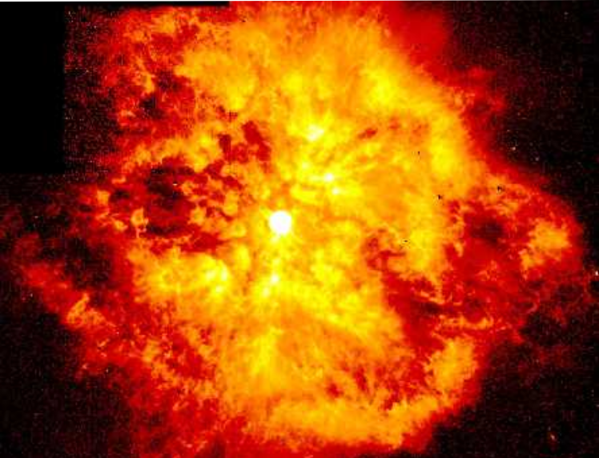
스스로의 힘으로 빛난다
별은 스스로 에너지를 만들어 열과 빛을 낸다. 별과 달리 지구와 같은
행성들은 스스로 에너지를 만들지 않는다. 별이 반짝반짝 빛나는 것은 별이
내뿜는 어마어마한 양의 에너지 때문이다. 이 에너지 때문에 별은 수십억
년 동안 엄청난 열과 빛을 뿜어내는 것이며 그 열과 빛 때문에 멀리서도
반짝반짝 빛이 나는 것처럼 보인다. 별은 항상 그 자리에서 빛나지만
낮에는 태양빛에 가려 보이지 않을 뿐이다.
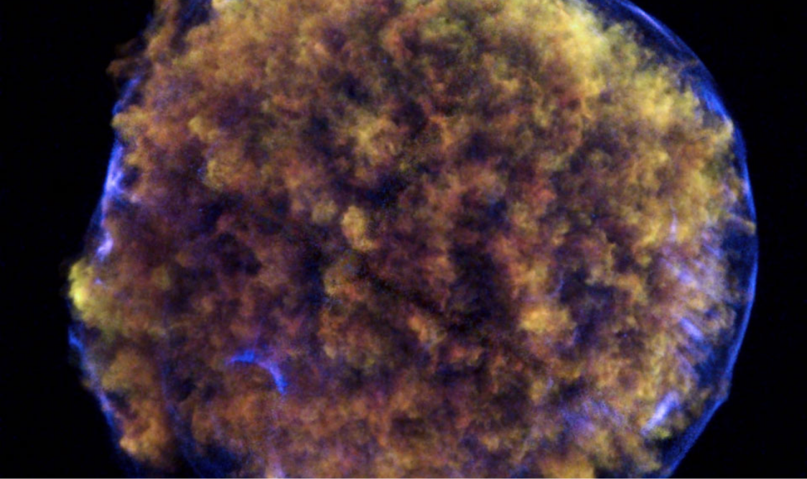
다양한 밝기
기원전 130년경 고대 그리스의 천문학자 히파르코스는 맨눈으로 볼 수
있는 가장 밝은 별을 1등급, 가장 어두운 별을 6등급으로 나타냈다. 등급
앞에 있는 숫자가 작을수록 더 밝은 별이다. 1등급 별은 6등급 별 보다
100배가 밝고, 각 등급 사이의 밝기는 2.5배씩 차이가 난다. 과학 기술이
발달해 관측할 수 있는 별들이 많아지면서 마이너스(-) 등급으로
표시되는 별들도 생겼다. 이렇게 우리 눈에 그대로 보이는 별의 밝기를
'겉보기 등급'이라고 하며 겉보기 등급이 가장 밝은 별은 지구와 가장
가까이 있는 태양이다.
그런데 겉보기 등급은 별의 실제 밝기가 아니다. 지구에서 아주 멀리 떨어져 있으면 밝은 별도 어둡고 희미하게 보이기 때문이다. 그래서 천문학자들은 별들을 모두 같은 거리에 놓았을 때의 밝기를 나타내는 '절대 등급'을 만들었다. 겉보기 등급이 -26.7등급인 태양은 절대 등급이 4.8등급밖에 안 되고, 겉보기 등급이 2등급인 북극성은 절대 등급이 -3.6등급이나 된다. 즉, 북극성은 태양보다 2000배가량 밝다는 것이다.
그런데 겉보기 등급은 별의 실제 밝기가 아니다. 지구에서 아주 멀리 떨어져 있으면 밝은 별도 어둡고 희미하게 보이기 때문이다. 그래서 천문학자들은 별들을 모두 같은 거리에 놓았을 때의 밝기를 나타내는 '절대 등급'을 만들었다. 겉보기 등급이 -26.7등급인 태양은 절대 등급이 4.8등급밖에 안 되고, 겉보기 등급이 2등급인 북극성은 절대 등급이 -3.6등급이나 된다. 즉, 북극성은 태양보다 2000배가량 밝다는 것이다.
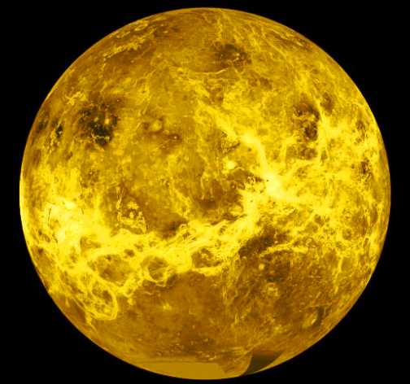
스타
우리는 하늘의 별처럼 빛나는 존재들을 스타로 칭한다.
스타란 누구나 우러러볼 수 있는 아주 높은 지위에 있는 사람을 가리키며. 비슷한 의미의 한자 ‘거성’이라 칭하기도 한다. 모든 연예인이 스타가 아니며 특정한 팬층을 보유한 소수만이 스타라고 불리는 점에서 볼 때, 스타는 희소성의 가치가 인정된다.
스타란 누구나 우러러볼 수 있는 아주 높은 지위에 있는 사람을 가리키며. 비슷한 의미의 한자 ‘거성’이라 칭하기도 한다. 모든 연예인이 스타가 아니며 특정한 팬층을 보유한 소수만이 스타라고 불리는 점에서 볼 때, 스타는 희소성의 가치가 인정된다.

다양한 색깔
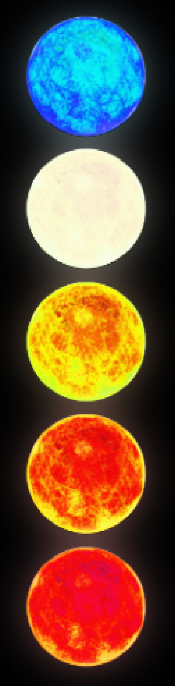
하늘에 보이는 별들은 각각 다른 색깔을 지니고 있다. 눈으로 보기엔 전부
똑같아 보이지만 망원경으로 자세히 보면 다른 색깔인 것을 알 수 있다.
어떤 별은 푸르스름하고 어떤 별은 붉으며 노란색, 주황색, 흰색, 보라색
별이 있다. 별은 왜 이렇게 다양한 색깔을 띨까? 그 원리는 간단하다. 금속
막대기를 불에 달구면 처음에는 붉은색을 띠다가 점차 온도가 올라갈수록
주황색으로, 주황에서 노랑으로 노랑에서 흰색으로. 막바지엔 푸르스름하게
바뀌는 것을 볼 수 있다. 이처럼 온도에 따라 색의 차이를 가지는 것이다.
앞서 설명한 원리에 따라 별은 저마다 파란색에서 붉은색 사이에 해당하는 고유의 색깔을 가지고 있다. 별의 표면 온도가 낮을수록 붉은색으로 보이고 온도가 높을수록 푸른색으로 보인다. 별의 색깔은 곧 그 별의 표면 온도를 나타내는데, 온도로써 별을 분류하는 데는 일곱 가지 분광형을 사용한다. 청색은 O형, 청백색은 B형, 백색은 A형, 황백색은 F형, 황색은 G형, 주황색은 K형, 적색은 M형이다. 우리에게 가장 친숙한 별인 태양은 표면 온도가 약 6,000℃인 노란색이므로 G형 별에 속한다.
앞서 설명한 원리에 따라 별은 저마다 파란색에서 붉은색 사이에 해당하는 고유의 색깔을 가지고 있다. 별의 표면 온도가 낮을수록 붉은색으로 보이고 온도가 높을수록 푸른색으로 보인다. 별의 색깔은 곧 그 별의 표면 온도를 나타내는데, 온도로써 별을 분류하는 데는 일곱 가지 분광형을 사용한다. 청색은 O형, 청백색은 B형, 백색은 A형, 황백색은 F형, 황색은 G형, 주황색은 K형, 적색은 M형이다. 우리에게 가장 친숙한 별인 태양은 표면 온도가 약 6,000℃인 노란색이므로 G형 별에 속한다.
특별한 선물
별자리에 얽힌 신화에는 유독 사랑과 관련된 이야기가 많다. 거문고자리는
사랑하는 아내를 위해 죽음을 택했던 오르페우스의 아름다운 사랑 이야기가
담긴 별자리이다. 그리스 신화에 나오는 최고의 시인이자 음악가였던
오르페우스는 물의 요정이었던 에우리디케와 사랑에 빠졌고 결혼까지 하게
되었다. 그러던 어느 날, 아내인 에우리디케가 악당에게 쫓겨 도망치다
뱀에 물려 죽게 되는 비극이 일어났다. 하지만 죽음마저도
오르페우스에게서 아내를 빼앗아 갈 수는 없었다. 오르페우스는 온갖
고초를 겪으며 저승 세계로 아내를 찾아 나섰고, 결국 저승 세계의 왕인
하데스의 마음까지도 감동시켰다.
하데스는 지상에 도달할 때까지 뒤따라오는 아내를 돌아보지 않는다는 조건으로 오르페우스에게 아내를 돌려줄 것을 약속했다. 그러나 오르페우스는 지상의 빛이 보이는 길목에 다다랐을 때 호기심을 참지 못하고 뒤를 돌아보았고, 결국 아내는 안개로 변하여 다시 저승으로 사라지고 말았다. 그 후 다시는 아내를 만날 수 없게 된 오르페우스는 슬픔에 빠져 산속을 헤매다 결국 비참한 최후를 맞게 되었다. 그는 죽으면서도 아내의 이름을 외쳤고, 그의 아름다운 사랑에 감동한 제우스 신은 그가 키던 하프를 하늘에 올려 별자리로 만들어 주었다고 한다. 그것이 바로 거문고자리이다. 그의 하프는 하늘에서도 아름다운 사랑의 음악을 연주하고 있다고 한다.
하데스는 지상에 도달할 때까지 뒤따라오는 아내를 돌아보지 않는다는 조건으로 오르페우스에게 아내를 돌려줄 것을 약속했다. 그러나 오르페우스는 지상의 빛이 보이는 길목에 다다랐을 때 호기심을 참지 못하고 뒤를 돌아보았고, 결국 아내는 안개로 변하여 다시 저승으로 사라지고 말았다. 그 후 다시는 아내를 만날 수 없게 된 오르페우스는 슬픔에 빠져 산속을 헤매다 결국 비참한 최후를 맞게 되었다. 그는 죽으면서도 아내의 이름을 외쳤고, 그의 아름다운 사랑에 감동한 제우스 신은 그가 키던 하프를 하늘에 올려 별자리로 만들어 주었다고 한다. 그것이 바로 거문고자리이다. 그의 하프는 하늘에서도 아름다운 사랑의 음악을 연주하고 있다고 한다.
당신에게 맞는 별은?
| 관측 방법 | 눈 | 쌍안경 | 천체망원경 | ||||
| 밝기 | 1등성 | 2등성 | 3등성 | 4등성 | 5등성 | 6등성 | |
| 색깔 | 청색 | 청백색 | 백색 | 황백색 | 황색 | 주황색 | 적색 |
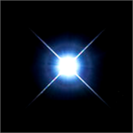
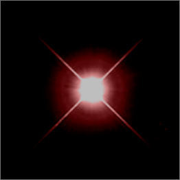
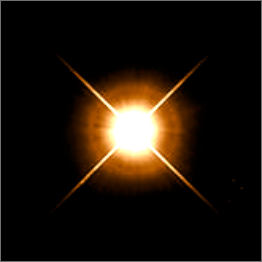
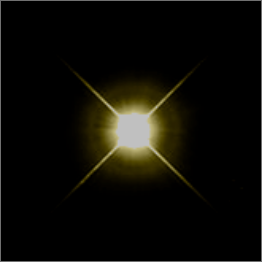
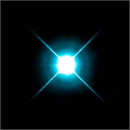
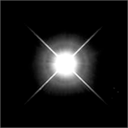
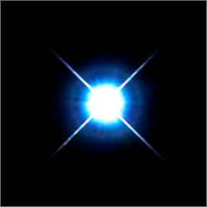
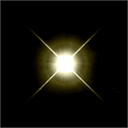